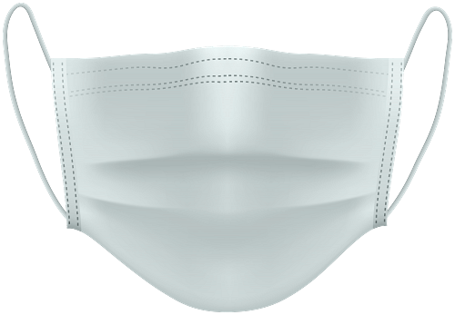

Quienes Somos
Nuestra empresa se encarga de brindar un servicio totalmente gratuito en el que informamos sobre el porcentaje que tiene cada producto de bioseguridad contra el covid-19, nos encargamos en dar información certera y segura para que nuestros visitantes conozcan sobre la seguridad de cada producto, ya que últimamente las personas usan estos equipos médicos sin saber realmente que seguridad nos ofrece para uno mismo. Debemos tener en cuenta que estos datos son actuales (11/2/2021) y que con el tiempo podrían variar. Tenemos como misión informarles a la población la realidad de estos insumos médicos que usamos frecuentemente pero desconocemos la seguridad que según nos ofrece.
Mascarillas 70%

También conocidas como mascarillas médicas, las mascarillas quirúrgicas son descartables, no quedan ajustadas, y protegen la nariz y la boca del que la usa del contacto con gotitas, salpicaduras y aspersiones que puedan contener microbios. Las mascarillas quirúrgicas tienen un porcentaje del 70% ya que filtran las partículas grandes en el aire. Pueden proteger a otros al reducir la exposición a la saliva y las secreciones respiratorias de la persona que la usa. No esta comprobado que las mascarillas quirúrgicas sean seguras contra el covid-19 pero si no encontramos las n96 o kn95 podemos optar por ellas.
Trajes 99%

Por la pandemia, muchos ciudadanos no solo optan por las mascarillas y los guantes, sino que recurren también al uso de overoles, es decir, ropa de una sola pieza que los proteja del virus. Para el médico salubrista Víctor Tafur, un traje de protección biológica debe poseer características especiales que no cualquier traje de tela o plástico cumplen. Estos trajes tienen el 99% de seguridad, quiere decir que son casi la opción perfecta para protegerse del covid-19, este equipo de bioseguridad es un poco costoso por el tipo de material que lleva llamado tela antiestática, ya que no es un material común si no uno especial, para ser más específicos los componentes usados suelen ser tela laminada microporosa de polipropileno, sin costuras en la parte superior de las mangas y hombros, con capucha, cintura y tobillos elásticos. Cabe destacar que el traje no protege las manos para eso deben colocarse sus respectivos guantes de látex o goma.
Alcohol 70%

Debido a su actividad virucida, y en base a su efectividad sobre otros tipos de coronavirus, el alcohol etílico diluido (por ejemplo al 70%) podría estar indicado para la desinfección de determinados materiales médicos contaminados por Covid-19 la efectividad del alcohol isopropílico para la desinfección de superficies contaminadas por COVID-19 se resumía que, de modo similar a lo que ocurre con otros coronavirus, el etanol al 62-71% también podría reducir la infectividad del SARS-CoV-2 en las superficies. Y que se recomendaba el uso de isopropanol al 75% en las fórmulas para la desinfección de las manos pero no para superficies.
Protector facial 80%

Según un estudio de simulación de tos de 2014, una buena pantalla plástica puede reducir la exposición total a las gotas expulsadas por la tos y los aerosoles (las gotas diminutas) en un 96% a una distancia de 46 cm.Pero, con los aerosoles más pequeños, el protector fue menos efectivo, bloqueando al 68% inmediatamente después de la exposición a la tos, y solo al 23% en los 30 minutos siguientes, ya que estos aerosoles más pequeños pueden quedar flotando bajo el visor, en el espacio donde se produce la inhalación.
Gel antibacterial 50% - 70%
Un gel antibacterial, de base alcohólica, (el etanol es el único aprobado para usar sobre la piel humana) es efectivo para matar hongos, bacterias y virus, incluido el coronavirus, cuando tiene una concentración entre el 62% y el 69,99%. Los que se acercan más al 70% los eliminan en el lapso de un minuto, los que bordean el 62% pueden tardarse en eliminarlos entre 5 y 10 minutos.